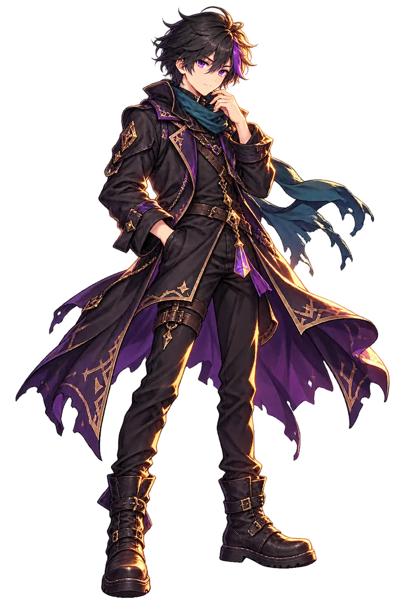

Uma sombra maior que o barco rompe a superfície. A quilha estala. Quando você volta a abrir os olhos, a maré já deixou seus pertences entre as pedras. Na trilha acima da praia, um lobo de máscara pálida espera que você se levante.
Ao sinal, toque em avançar. Complete dez passos e tente superar seu tempo.